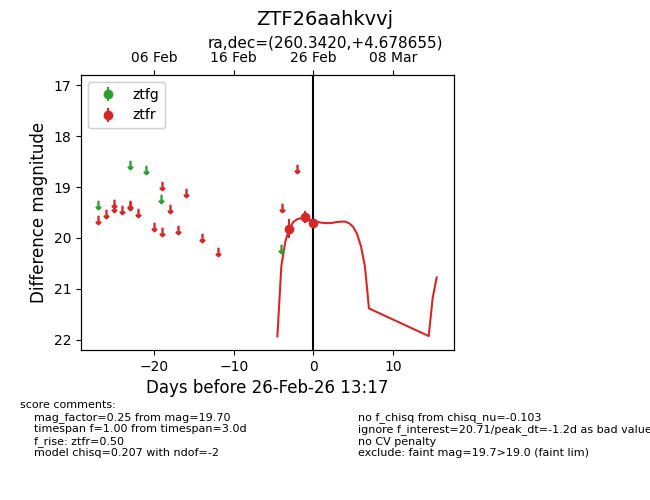
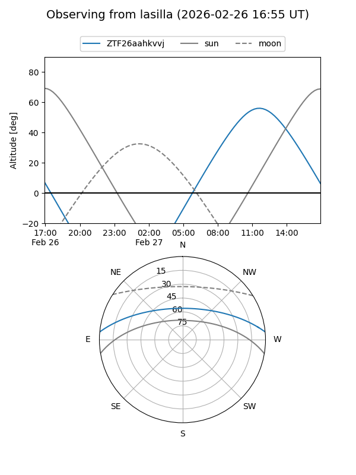
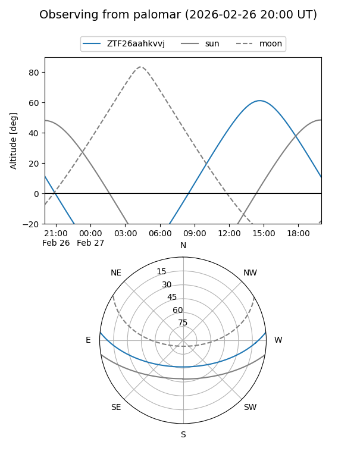
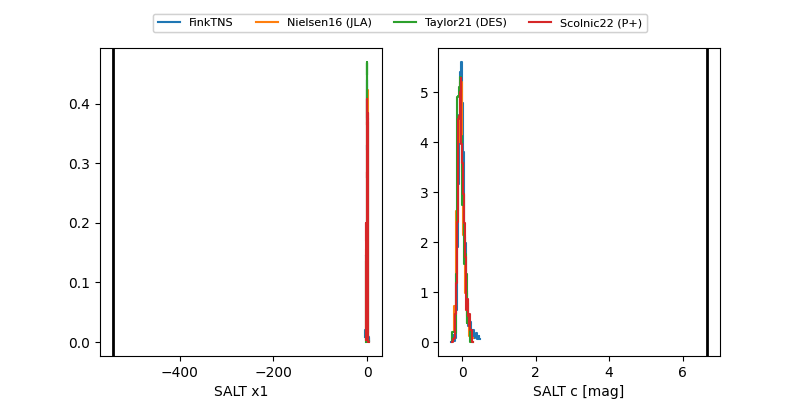

ZTF26aahkvvj
Target ZTF26aahkvvj at 2026-02-26 13:18
Aliases and brokers:
FINK: link
Lasair: link
ALeRCE: link
alt names
ZTF26aahkvvj (ztf,fink_ztf)
Coordinates:
equatorial (ra, dec) = 260.3420,+4.67866
equatorial (HMS+DMS) = 17:21:22.07,+04:40:43.16
galactic (l, b) = (26.6439,+22.14133)
Flags:
Photometry:
last ztfr=19.70
3 ztfr detections
Lightcurve

Visibility


Additional plots
